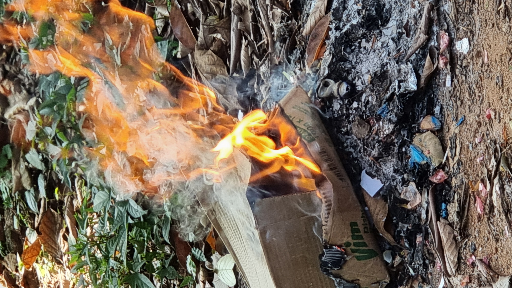
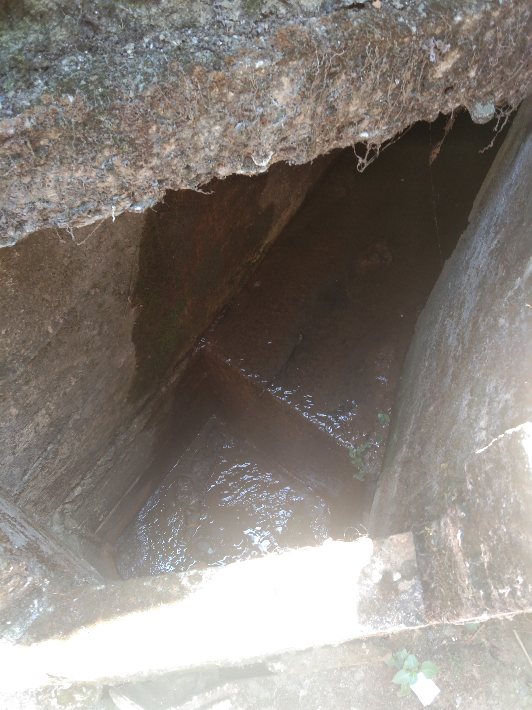

Issues regarding Pollution
Under this section, we are used to discuss about the problems which arise due to unmanaged waste disposal.
These problems can be categorized into three main sub problems. They are,
- Air Pollution
- Water Pollution
- Soil Pollution
Air Pollution
People fire up garbage and poisonous smoke is added to the atmosphere.
Photochemical smog can be happened.
It reduces the visibility of air.
The bad smell of garbage makes the air polluted.
The smell of garbage is caused for spreading flies and worms.
Diseases like Asthma, Lung cancers can be infected due to air pollution.
Water Pollution
Many living creatures in rivers and lakes die due to water pollution.
Algae is growing in water resources which harms the other plants and animals.
People get infected with diseases like cholera, diarrhoea, dysentery, hepatitis A due to the usage of polluted water.
Rubbish that is blocked in drains may cause to floods.
Polluted water resources are birth places for mosquitoes.
Therefore diseases like dengue, Chikungunya can be infected.


Soil Pollution
Useful animals lived in soil will be died due to firing up of garbage. Ex:-Earth worm
Firing up garbage is adding heat to the soil.
Ashes of fire make the structure of soil altered.
Non-digesting garbage with toxic substances is adding chemicals to soil.
Soil contamination affects metabolism of microorganisms in soil.

